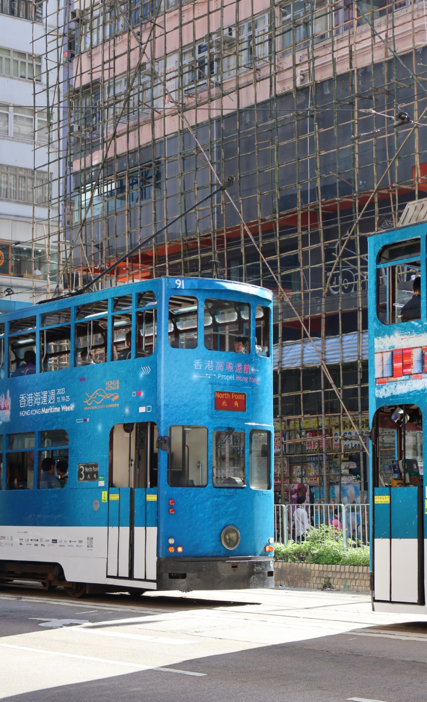
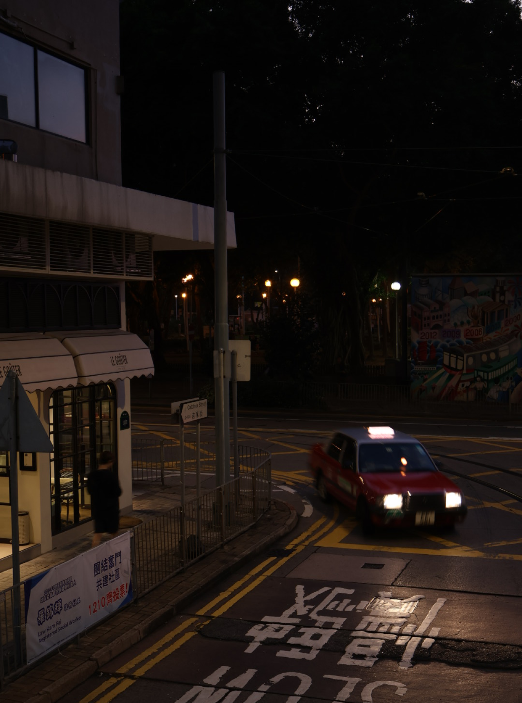

RETROGRAPHY
An exciting photo of the thrill and excitement that rides bring
Photo By Shing Yue

Hong Kong buses can showcase Hong Kong’s unique cityscape and public transportation system
Photo By Shing Yue
Hong Kong taxis have become one of the city's symbols, usually with red as the main color
Photo By Shing Yue
